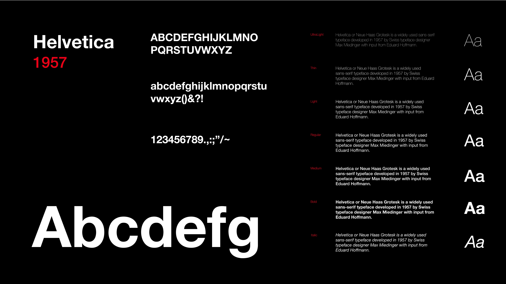

Helvetica
Helvetica
Helvetica or Neue Haas Grotesk is a widely used sans-serif typeface developed in 1957 by Swiss typeface designer Max Miedinger
In typography and lettering, a sans-serif, sans serif, gothic, or simply sans letterform is one that does not have extending features called "serifs" at the end of strokes. Sans-serif fonts tend to have less stroke width variation than serif fonts. They are often used to convey simplicity and modernity or minimalism.
Helvetica or Neue Haas Grotesk is a widely used sans-serif typeface developed in 1957 by Swiss typeface designer Max Miedinger
Futura is a geometric sans-serif typeface designed by Paul Renner and released in 1927. It was designed as a contribution on the New Frankfurt-project. It is based on geometric shapes, especially the circle, similar in spirit to the Bauhaus design style of the period.
Open Sans was designed with an upright stress, open forms and a neutral, yet friendly appearance. It was optimized for print, web, and mobile interfaces, and has excellent legibility characteristics in its letterforms.
The Proxima Nova family is a complete reworking of Proxima Sans (1994). The original six fonts (three weights with italics) have been expanded to 48 full-featured OpenType fonts. There are three widths: Proxima Nova, Proxima Nova Condensed, and Proxima Nova Extra Condensed. Each width consists of 16 fonts—seven weights with matching italics.
Montserrat designed by Julieta Ulanovsky, who lives in Buenos Aries. Montserrat is a useful typeface, loved by many web and UI designers. You can use it in any design project.